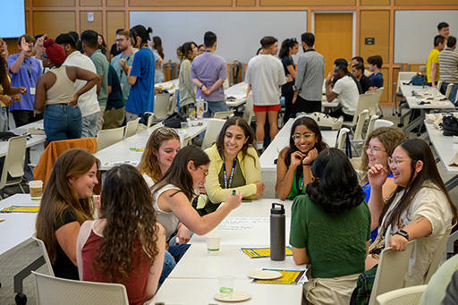
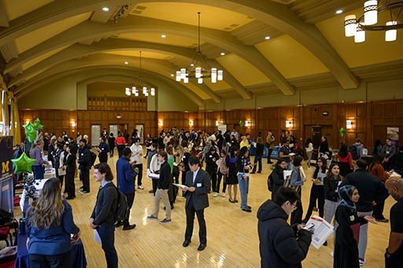

Networking & Connections
Why Networking Matters
Networking is a big part of finding a job. At UMSI, you have many ways to meet professionals, alumni, and other students. Building a good network helps you learn about different jobs and find hidden opportunities. These tools will help you feel more comfortable reaching out to people.

Making Connections
If you are not sure how to start, check out these guides. They will show you exactly what to say when you email someone new and how to ask good questions during a chat.
- Intro to Making Connections
Read this first to understand the basics of networking. - Networking Outreach Email Examples
Use these simple templates to write messages on LinkedIn or email. - Informational Interviews Using the TIARA Method
Learn the TIARA framework so you know what to ask when you meet a professional.
Career Events
Going to events is the easiest way to practice networking. We host career fairs and workshops all year.

- Attend a Career Event
See the calendar for upcoming events on campus. - [Recording] 2024 Career Fair Prep Workshop
Watch this video to get ready for the next fair. - [Workshop Slides] 2024 Career Fair Prep
Review the slides if you do not want to watch the whole video.
Online Portals
Use our online system to find jobs and connect with employers who want to hire UMSI students.